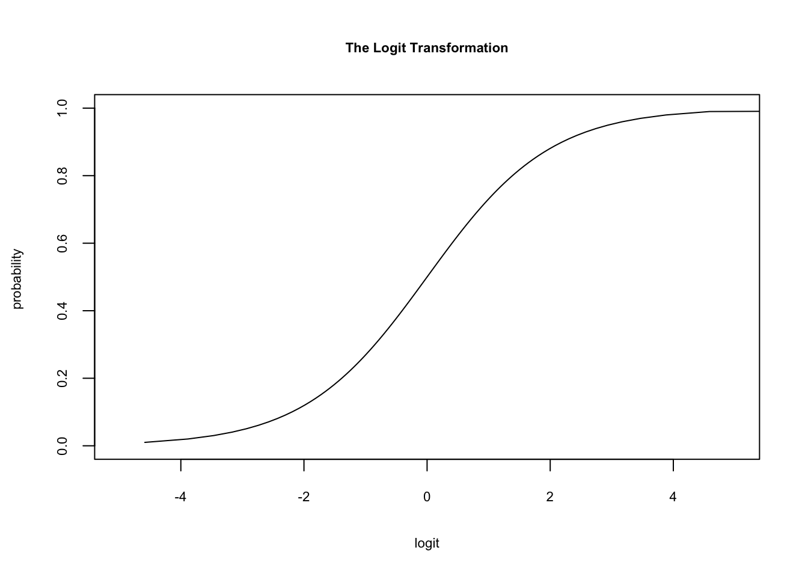
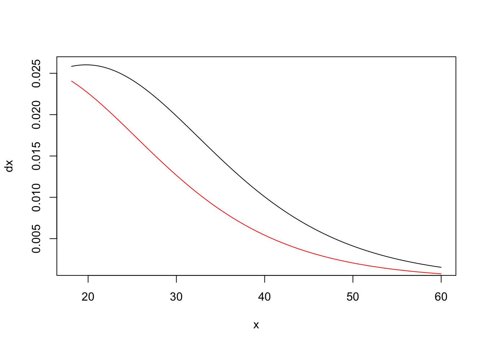
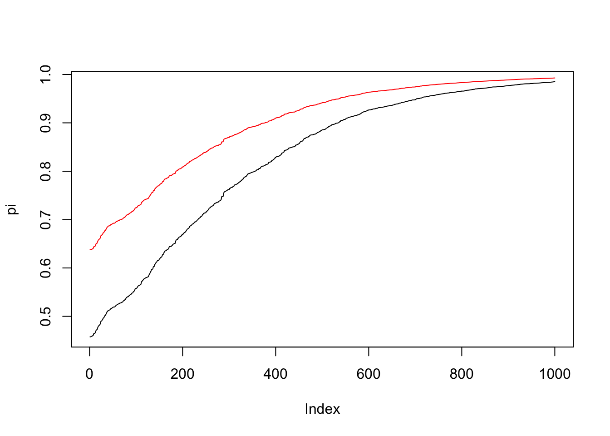
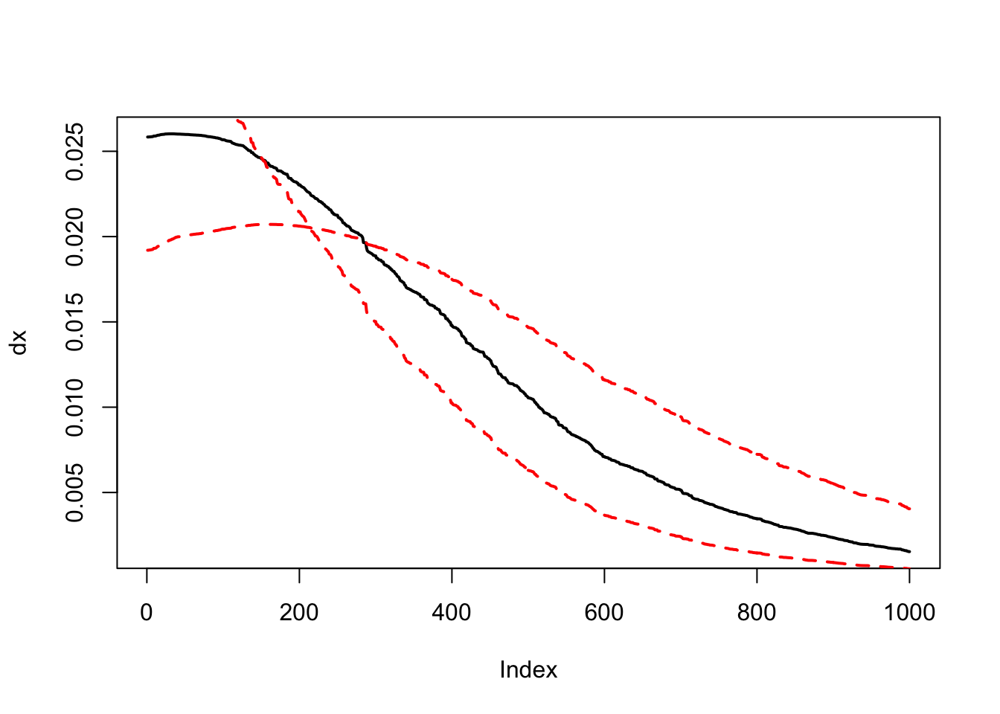
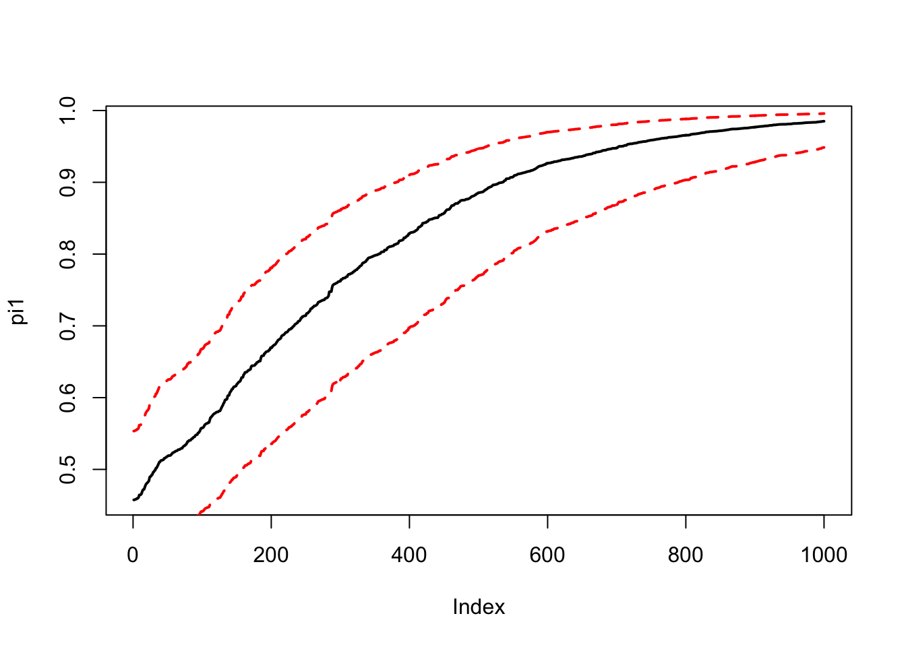

Chapter 17 Logistic Regression
Consider the following model \[\begin{equation}P(Y_i=y_i)=\pi_i^{y_i}(1-\pi_i)^{1-y_i}\end{equation}\]
where \[\begin{equation} \pi_i=\frac{exp\{ \mathbf{x}_i'\boldsymbol{\beta} \}}{1+exp\{ \mathbf{\mathbf{x}}_i'\boldsymbol{\beta} \}} \end{equation}\]
- Simulate this model with the probabilities as described above with the following values:
- \(n =1000\)
- \(\beta_0=-2, \, \beta_1=0.1,\, \beta2=1\).
- \(x_{0i}=1 \, \forall \,i\) , \(x_{1i}\sim \mathcal{U}(18,60), \, x_{2i}\sim \mathcal{B}(0.5)\).
Estimate \(\beta_0, \beta_1, \beta_2\) via maximum likelihood and calculate the standard errors.
Propose and calculate a suitable method for the interpretation of the coefficients as discussed in the lecture.
##The logit transformation#
####Generate a vector of probabilities########
pi=seq(0,0.99999999,le=100)
logit<-function(x)
{
logit<-log(x/(1-x))
return(logit)
}
plot(logit(pi),pi,type="l", xlim=c(-5,5), main="The Logit Transformation",xlab="logit",ylab="probability ", cex.main=0.7, cex.lab=0.7,cex.axis=0.7)
#Maximum Likelihood estimation: Logit###
##General Syntax###
library(miscTools)#the maxLik package acts as a wrapper for the more basic "optim", the library miscTools is required.
library(maxLik)
loglike<-function(beta)#Define a function that takes only the parameter vector as arguments.
{
ll <- "my log likelihood function" #depending on your optimization routine,
#check whether you need the negative or the positive log likelihood!
return(ll)
}
estim<-maxBFGS(loglike,finalHessian=TRUE,start=c(.,.))###initialize the optimization,
#pass on starting values and store the results in estim
estim.par<-estim$estimate ### store the paramter estimates in a variable "estim.par"Solution
## Loading required package: miscTools##
## Please cite the 'maxLik' package as:
## Henningsen, Arne and Toomet, Ott (2011). maxLik: A package for maximum likelihood estimation in R. Computational Statistics 26(3), 443-458. DOI 10.1007/s00180-010-0217-1.
##
## If you have questions, suggestions, or comments regarding the 'maxLik' package, please use a forum or 'tracker' at maxLik's R-Forge site:
## https://r-forge.r-project.org/projects/maxlik/n <- 1000#sample size
beta0 <--2#coefficient on the intercept
beta1 <- 0.1#coefficient on the regressor
beta2<-1
beta<-cbind(beta0,beta1,beta2)
x <- sort(runif(n=n, min=18, max=60))#generating the regressor
x2<-rbinom(n,1,0.5)
pi_x <- exp(beta0 + beta1 * x+beta2*x2) / (1 + exp(beta0 + beta1 * x+beta2*x2))#generating the probabilities for the binomial
y <- rbinom(n=length(x), size=1, prob=pi_x)#drawing y with the transformed logit probabilities
data <- cbind(x, pi_x, y)
X<-cbind(rep(1, n),x,x2)
loglike<-function(beta)#the likelihood function for the logit model
{
ll <- sum(-y*log(1 + exp(-(X%*%beta))) - (1-y)*log(1 + exp(X%*%beta)))
return(ll)
}
estim<-maxBFGS(loglike,finalHessian=TRUE,start=c(0,1,1))#initialize estimation procedure.
estim.par<-estim$estimate# give out parameter estimates.
estim.par## [1] -2.0573660 0.1040998 0.7349992estim.hess<-estim$hessian###the optimization routine returns the hessian matrix at the last iteration.
Cov<--(solve(estim.hess))##the covariance matrix is the (negative) inverse of the hessian matrix.
sde<-sqrt(diag(Cov))#the standard errors are the square root of the diagonal of the inverse Hessian.
sde## [1] 0.35754704 0.01061589 0.20389410###marginal effect####
x2<-0
####marginal effects for beta1####
pi<-exp(estim.par[1] + estim.par[2] * x[500]+estim.par[3]*x2) / (1 + exp(estim.par[1] + estim.par[2] * x[500]+estim.par[3]*x2))
dx<-estim.par[2]*(pi)*(1-pi)
####Calculate for a range of x values and x2=0###
dx<-c()
for(i in 1:length(x))
{
pi<-exp(estim.par[1] + estim.par[2] * x[i]+estim.par[3]*x2) / (1 + exp(estim.par[1] + estim.par[2] * x[i]+estim.par[3]*x2))
dx[i]<-estim.par[2]*(pi)*(1-pi)
}
plot(x,dx,type="l")
####Calculate for a range of x values and x2=1###
x2<-1
dx1<-c()
for(i in 1:length(x))
{
pi<-exp(estim.par[1] + estim.par[2] * x[i]+estim.par[3]*x2) / (1 + exp(estim.par[1] + estim.par[2] * x[i]+estim.par[3]*x2))
dx1[i]<-estim.par[2]*(pi)*(1-pi)
}
lines(x,dx1,col="red")
#####Predicted probabilities for beta2######
x2<-0
pi<-c()
for(i in 1:length(x))
{
pi[i]<-exp(estim.par[1] + estim.par[2] * x[i]+estim.par[3]*x2) / (1 + exp(estim.par[1] + estim.par[2] * x[i]+estim.par[3]*x2))
#dx[i]<-estim.par[2]*(pi)*(1-pi)
}
plot(pi,type="l")
#####Predicted probabilities for beta2######
x2<-1
pi1<-c()
for(i in 1:length(x))
{
pi1[i]<-exp(estim.par[1] + estim.par[2] * x[i]+estim.par[3]*x2) / (1 + exp(estim.par[1] + estim.par[2] * x[i]+estim.par[3]*x2))
#dx[i]<-estim.par[2]*(pi)*(1-pi)
}
lines(pi1,col="red")
####Quantifying uncertainty###########################
####Calculate for a range of x values and x2=0###
#####Original marginal effect for x2=0
x2=0
dx<-c()
pi1<-c()
for(i in 1:length(x))
{
pi<-exp(estim.par[1] + estim.par[2] * x[i]+estim.par[3]*x2) / (1 + exp(estim.par[1] + estim.par[2] * x[i]+estim.par[3]*x2))
pi1[i]<-pi
dx[i]<-estim.par[2]*(pi)*(1-pi)
}
dx_conf_high<-c()
pi_conf1<-c()
for(i in 1:length(x))
{
pi<-exp(estim.par[1] + (estim.par[2]+2*sde[2]) * x[i]+estim.par[3]*x2) / (1 + exp(estim.par[1] + (estim.par[2]+2*sde[2]) * x[i]+estim.par[3]*x2))
pi_conf1[i]<-pi
dx_conf_high[i]<-(estim.par[2]+2*sde[2])*(pi)*(1-pi)
}
####Calculate for a range of x values and x2=1###
x2<-0
dx_conf_low<-c()
pi_conf2<-c()
for(i in 1:length(x))
{
pi<-exp(estim.par[1] + (estim.par[2]-2*sde[2]) * x[i]+estim.par[3]*x2) / (1 + exp(estim.par[1] + (estim.par[2]-2*sde[2]) * x[i]+estim.par[3]*x2))
pi_conf2[i]<-pi
dx_conf_low[i]<-(estim.par[2]-2*sde[2])*(pi)*(1-pi)
}
###Make the plots, marginal effects#############
plot(dx,type="l",lwd=2)
lines(dx_conf_low,lty=2,lwd=2,col="red")
lines(dx_conf_high,lty=2,lwd=2,col="red")
###Predicted probabilities marginal effects#####
plot(pi1,type="l",lwd=2)
lines(pi_conf1,lty=2,lwd=2,col="red")
lines(pi_conf2,lty=2,lwd=2,col="red")